Nothing has been changed on the website. This is just the proposal for you to look at.
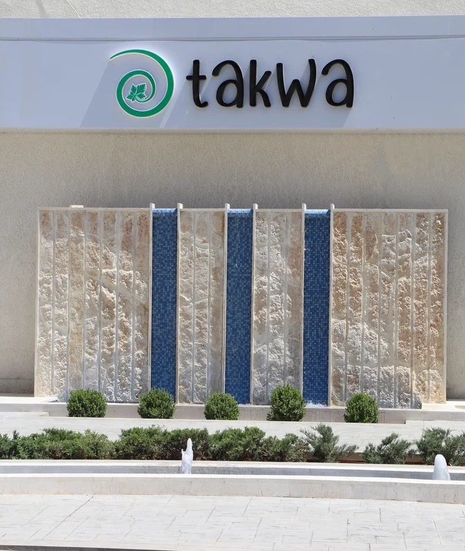
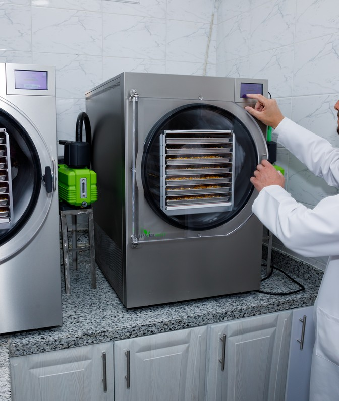
Technician in whites at the freeze dryers. Bright, clean and clearly food-grade — reads as a modern facility rather than a workshop. Much stronger than the current dim machine shot for a section headed “Get to Know Takwa Foods”.
from: IMG_8663.JPG (6469x4313)
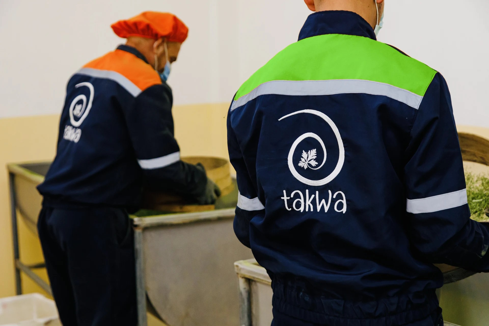
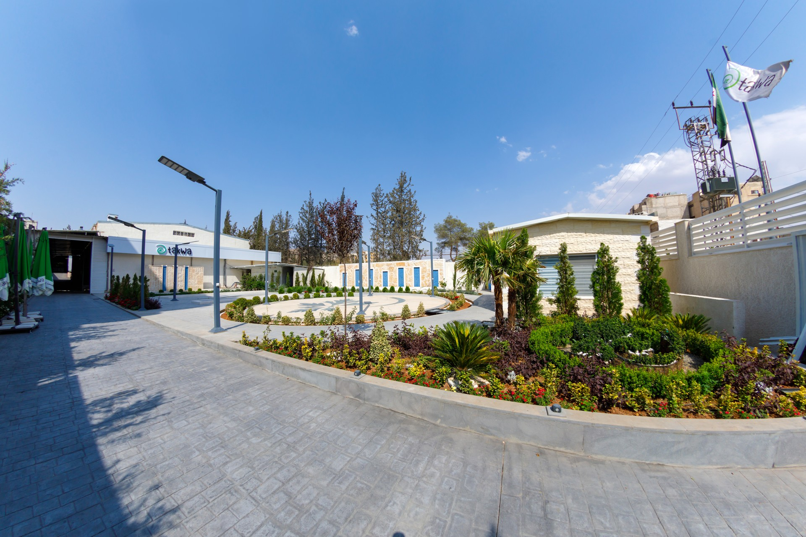
Facility exterior under blue sky. Establishes real scale and legitimacy behind the “Inside Takwa Foods, Factory Tour” heading, and the open sky leaves room for the white text on top.
from: IMG_8824.JPG (6626x4418)
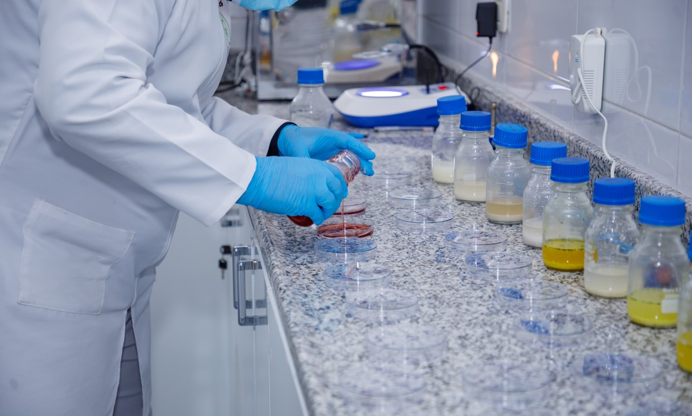
Lab bench with sample jars. Bright, colourful, and speaks to R&D and quality control.
from: IMG_8759.JPG (6720x4480)
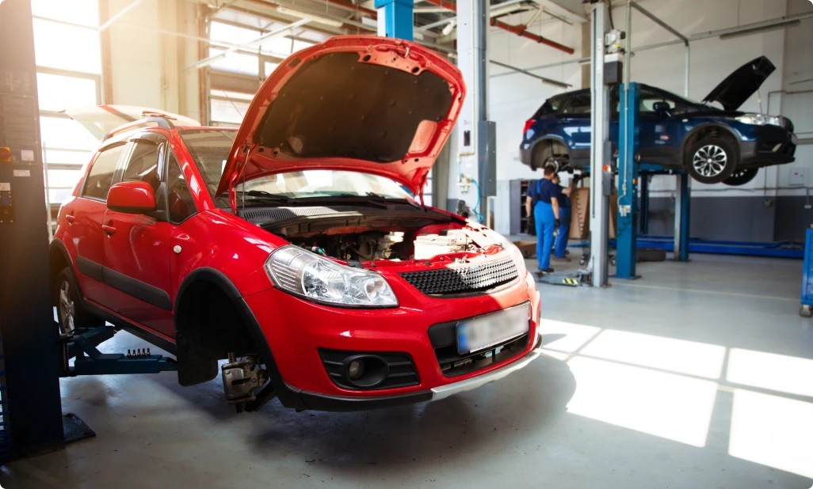
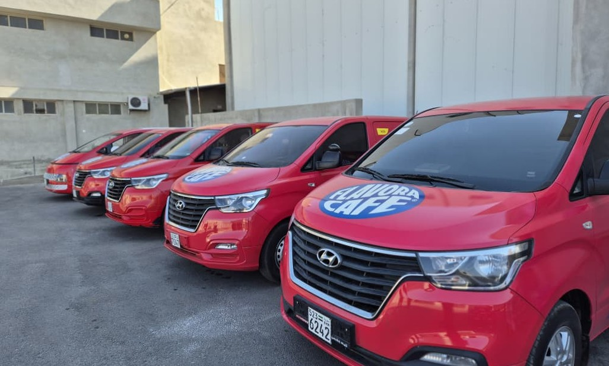
The branded delivery fleet. Strong visual proof of distribution reach and the most “company news”-looking shot in the set.
from: PHOTO-2025-08-24-11-10-15.jpg (1000x750)
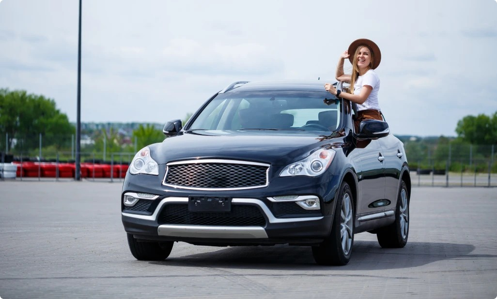
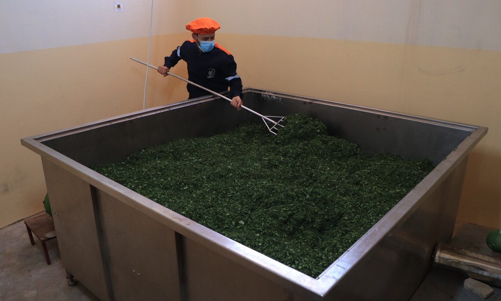
Herbs being turned in the drying vat — green, food-forward, and ties directly to the parsley-drying origin story on the About page.
from: IMG_8161.JPG (6000x4000)
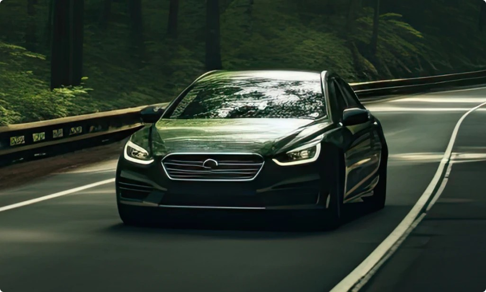
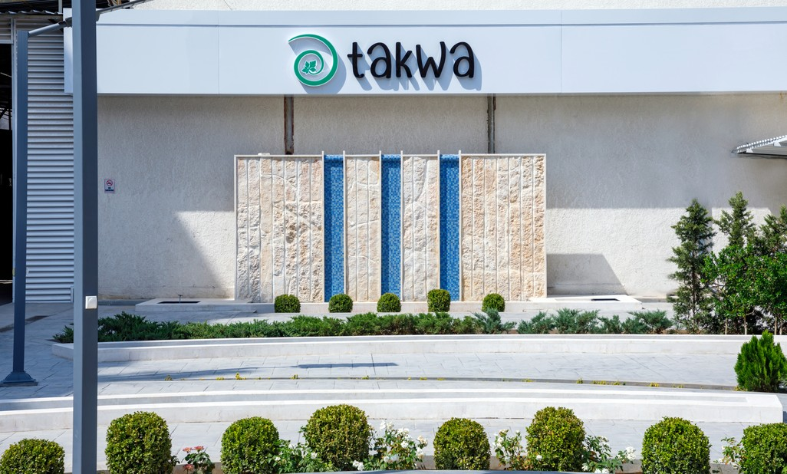
Branded building entrance with the takwa sign. Clean corporate shot that anchors the brand to a real place.
from: IMG_8812.JPG (5754x3836)
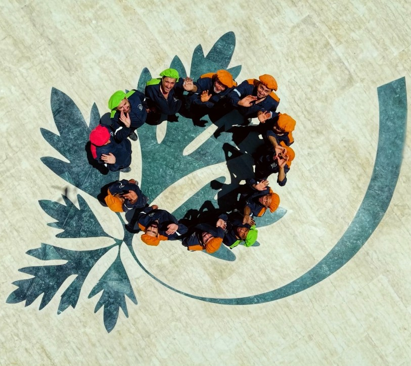
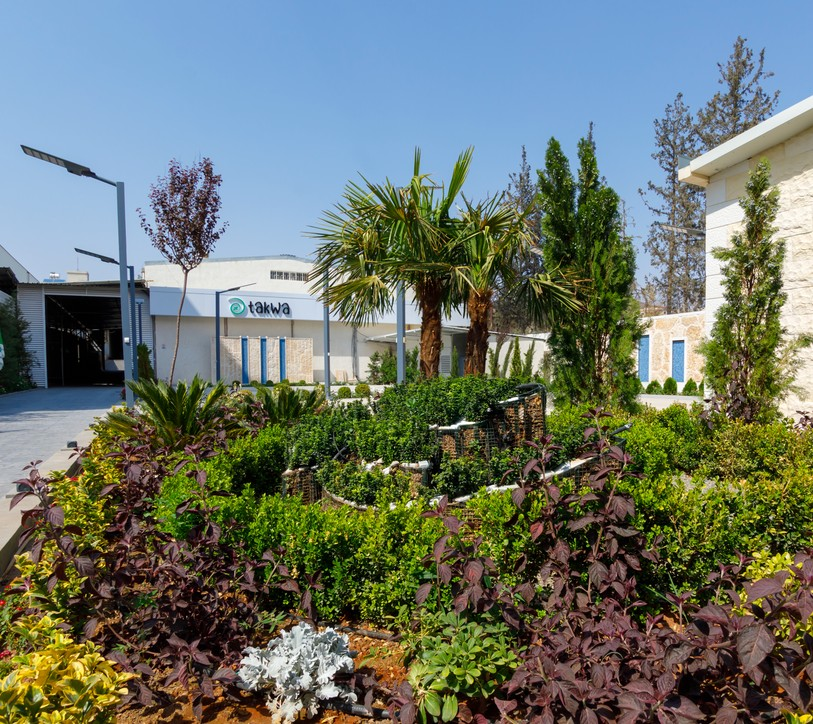
Landscaped grounds at the facility. Green, bright and welcoming — a better companion to the “Our Partners” block than the current stock template image.
from: IMG_8827.JPG (4134x2756)